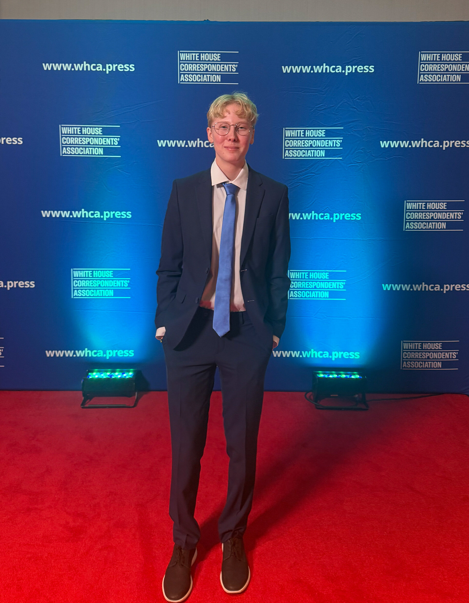

Lillian Gray (she/her) is a journalist from Austin, Texas currently majoring in journalism at the University of Maryland. Lillian strives to tell untold stories and share diverse perspectives through her photography and writing.
As she has grown as a journalist, she has gained a deeper understanding of the importance of her platform and aims to meet every story with compassion, curiosity, and truth.
Not only does she see how much it matters to people to have their stories told, but she also witnesses how it connects people and is so grateful to be one of the people who builds those bridges.
Fall 2026 - Junior Staff Writer for the Diamondback
Spring 2026 - Staff Reporter for Stories Beneath the Shell at the University of Maryland
2025 - Philip Merrill College of Journalism Francis J. Cormier White House Correspondents’ Association Scholarship
2022 - 2025 - Staff Reporter for The Shield at McCallum H.S.
2024-2025: National Scholastic Press Association: Opinion Story of the Year (1st), Writer of the Year (3rd), Photojournalist of the Year (5th), Digital Story of the Year - Interactive Graphic (Honorable Mention)
2025: Fred Ross Systemic Change Journalism Competition (Honorable Mention)
2025: NSPA Clips and Clicks: Feature Story (3rd), Opinion Story (5th), News Story (5th)
2022: 2023, 2024 - 2025: All-State Journalist
2024-25: Best of Student News Organization (Best of SNO) Awards: 14
2024: NSPA Clips and Clicks - News Story (1st), 3 Honorable Mentions
2024-2025: Association of Texas Photography Instructors: Texas Imagemaker , Advanced Photo Story (2nd)
2025: Scholastic Arts and Writing Gold Keys: Photo - Calm Before the Storm; Article - The Human Toll of Political Lies
2025: Quill & Scroll: Feature Photography (1st), Multimedia Opinions Package (1st), Interactive Informational Graphic (1st), Multimedia Feature News Package (3rd), Social Media: Individual (3rd), Editorial Page Design (3rd), DEI-Social Justice Writing (Honorable Mention)
2024-25: Texas Association of Journalism Educators: Superior Awards: Photograph, Infographic Presentation, Feature Photo, Personal Opinion Column, News Story, Caption Writing, Editorial/Opinion Page Design; Excellent Awards: Feature Photo, News Photo, Feature Story, Multimedia Presentation; 7 Honorable Mentions
2025: Southern Interscholastic Press Association: Opinion Package (1st), Social Media Breaking News (1st), Landscape Photography (1st), Computer Graphics (2nd), Online Portfolio (3rd), News Package (3rd), News Photo Cutlines (3rd)
2025: Scholastic Arts and Writing Honorable Mention - Personal Essay, Lily and Briley Best Friends
2024: ATPI Fall Contest: Second Place Photo Story, Austin Firefighters Climb 1,368 stairs
2024: White House Press Pool Pass: President Biden at the LBJ Presidential Library - July 29, 2024
2022-23: Best of Student News Organization (Best of SNO) Awards: 1